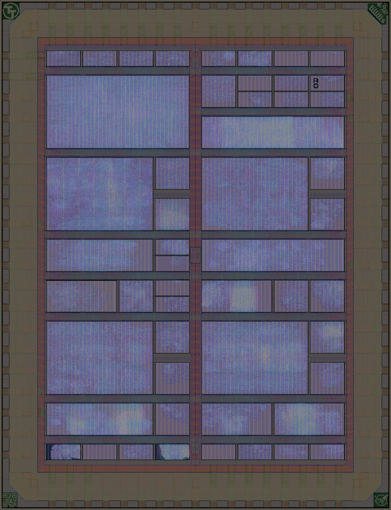
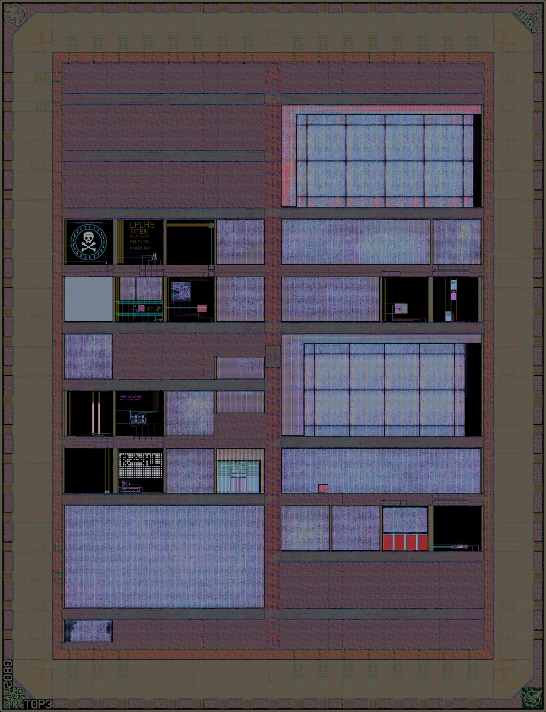

Tiny Tapeoutchips on wafer.space runs
5 dies · 321 projects · tinytapeout.com · Tiny Tapeout store
What is Tiny Tapeout?
Tiny Tapeout makes it quicker, easier and cheaper than ever to get your own design made on a real chip.
Many designs share one Tiny Tapeout die. Each project gets one or more small tiles, and a multiplexer on the chip connects the one you select to the pins. You can draw your first design in the browser, with no previous experience, by following the digital design guide, or write it in Verilog or another HDL. Tiny Tapeout's templates build and check it on GitHub, and the chip comes on a demo board that selects and drives your design.
Tiny Tapeout also runs workshops and supports teaching in universities and schools. Browse every Tiny Tapeout chip and the projects proven in silicon, or read the FAQ.
Tiny Tapeout and wafer.space are independent companies that work together. Tiny Tapeout runs its own shuttles: it takes the projects, builds the die, and sells and supports the chips and boards. wafer.space has the die manufactured as one of the designs on its GF180MCU runs, and these pages are wafer.space's measurements of it as manufactured.
For anything about a Tiny Tapeout project, chip or order, contact Tiny Tapeout. Tiny Tapeout's announcement of the partnership tells how it began.
Not ready to make your own chip?
Tiny Tapeout offers a cheap and easy way to get started. Put a small design on a shared Tiny Tapeout chip, from a few logic gates drawn in your browser to your own Verilog, and get it back on a board you can plug in. When your design outgrows a few tiles, a whole die on a wafer.space run is the next step.
Get started at tinytapeout.com Learn digital design Tiny Tapeout FAQ

On wafer.space runs
Tiny Tapeout puts many small designs on one die. These are the Tiny Tapeout dies made on wafer.space runs, each measured project by project from the layout as manufactured.
 TTP2
TTP2
Tiny Tapeout GF 0.2
Die TTP2 on wafer.space Run 1
52 projects · 197,197 logic cells
Status: Packaged Parts Shipped (12 May 2026)
wafer.space Run 1 (G801) (die TTP2) · ttgf0p2 on tinytapeout.com · buy this chip · files

TTPGTiny Tapeout GF 0.2
Die TTPG on wafer.space Run 1
52 projects · 197,196 logic cells
Status: Packaged Parts Shipped (12 May 2026)
wafer.space Run 1 (G801) (die TTPG) · ttgf0p2 on tinytapeout.com · buy this chip · files

T0P3Tiny Tapeout GF 0.3
Die T0P3 on wafer.space Run 2
32 projects · 113,169 logic cells
Status: Parts Shipped (Early Q4 2026)
wafer.space Run 2 (G802) (die T0P3) · ttgf0p3 on tinytapeout.com · store · files


Coming on wafer.space runs
Tiny Tapeout GF180MCU chips that have not been manufactured yet, from tinytapeout.com/chips. Each gets its pages here once it has been made.
Open for projects
TTGF26d
On wafer.space Run 3
- Projects close 7 December 2026
- 60 of 160 tiles taken, 100 reserved
- Chips expected 12 May 2027
- Shipping 9 June 2027 (estimated)
Tiny Tapeout has reserved tiles on this chip; see tinytapeout.com/chips.
Open for projects
TTGF26c
On wafer.space Run 3
- Projects close 7 December 2026
- 11 of 160 tiles taken
- Chips expected 12 May 2027
- Shipping 9 June 2027 (estimated)
Planned
TTGF27a
wafer.space run not yet announced
- Projects close April 2027 (estimated)
- Shipping October 2027 (estimated)
Planned
TTGF27b
wafer.space run not yet announced
- Projects close July 2027 (estimated)
- Shipping January 2028 (estimated)
Planned
TTGF27c
wafer.space run not yet announced
- Projects close October 2027 (estimated)
- Shipping April 2028 (estimated)
Planned
TTGF28a
wafer.space run not yet announced
- Projects close January 2028 (estimated)
- Shipping June 2028 (estimated)
Dates and tile counts are Tiny Tapeout's, from tinytapeout.com/chips and app.tinytapeout.com, as of 2026-10-19.
Other GF180MCU Tiny Tapeout chips
Tiny Tapeout chips on the GF180MCU process that were not made on a wafer.space run, so they are not measured here
Tiny Tapeout GF 0.1
24 projects
Tiny Tapeout's first, experimental GF180MCU chip. It was not made on a wafer.space run. Its projects are designs from earlier Tiny Tapeout chips.